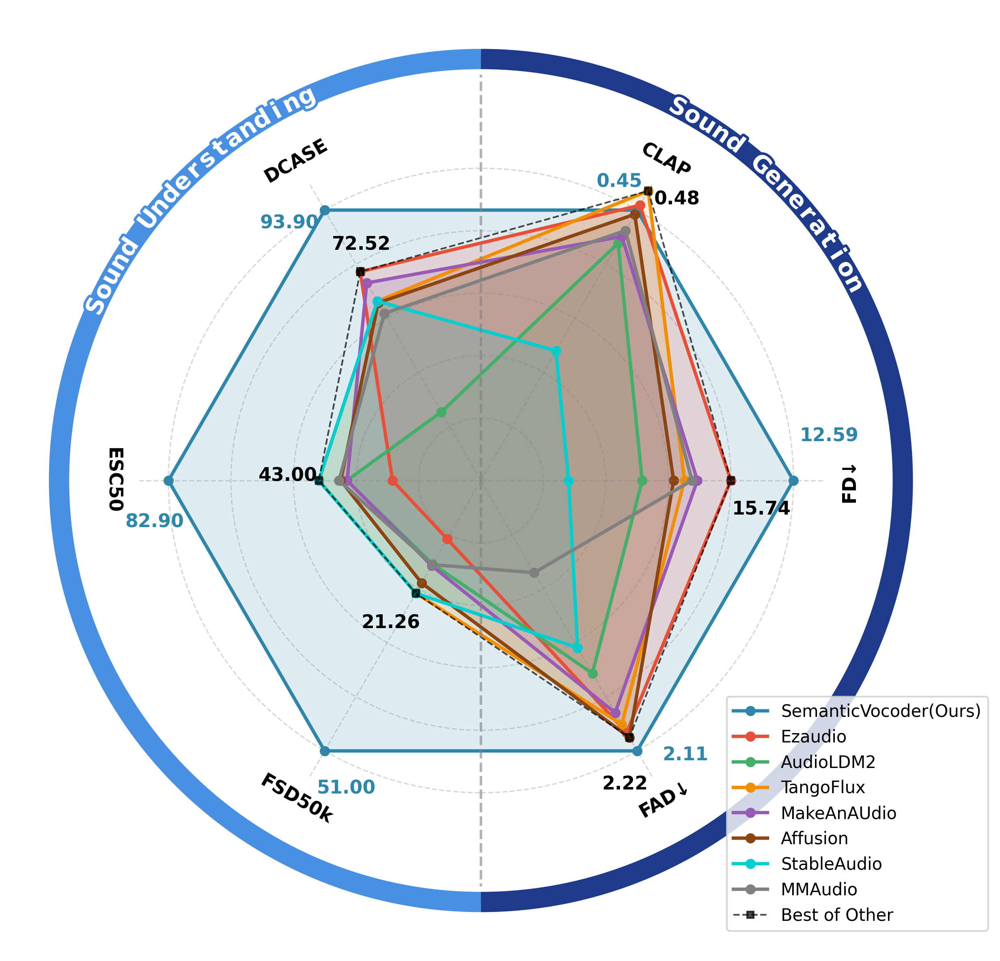
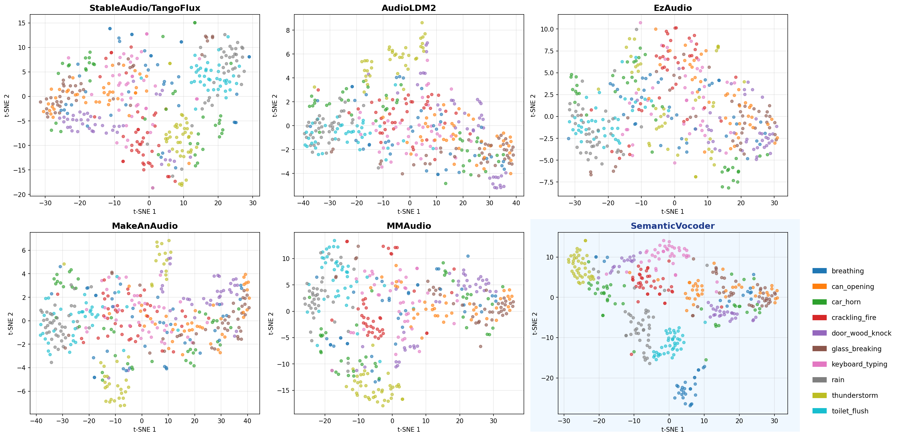

SemanticVocoder Construction
Pipeline
An overview of SemanticVocoder training, downstream TTA training, and downstream tasks inference.
Blue arrow
The SemanticVocoder training: the input audio is fed into a semantic encoder to extract semantic latents, which serve as conditions to train the flow-matching network for waveform prediction.
Red arrow
The audio generative DiT training: the input text is processed by a text encoder to obtain textual features, which are used to train the DiT model for generating semantic latents.
Black arrow
Downstream task inference: Equipped with SemanticVocoder, both audio generation and understanding tasks can be performed within the same semantic latent space.
Visualization of different latents on HEAR-esc50, where the 10 most frequent categories are presented. Semantic latents exhibit stronger discriminative structure and semantic disentanglement.

Comparison

Visualization
Visualization of different latents on HEAR-esc50, where the 10 most frequent categories are presented. Semantic latents exhibit stronger discriminative structure and semantic disentanglement.
